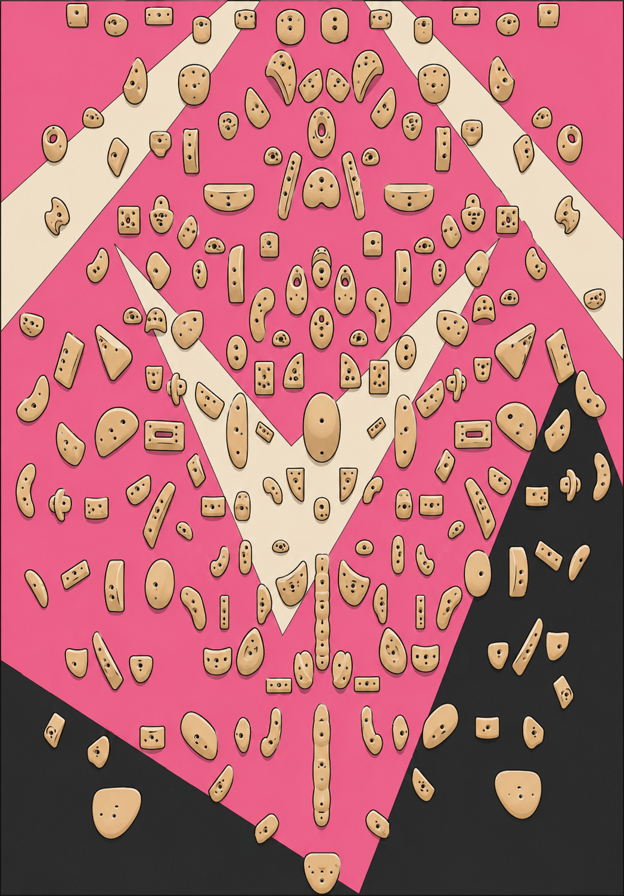

Loading problems…
Project Board
Loading problems…

Tap holds to build your problem. The first two are the start, the rest are holds. In the top quarter of the board there are no starts — tap a hold there again to make it the finish (one finish only; the rest can be holds for a top traverse). Tap a hold again to change it.
Anchor: tap a dot, then tap where that hold really is on the image; pin 3–4 spread-out holds (corners are ideal), then Fit snaps them all. Nudge: drag any stragglers. Add: place a hold that's missing from the map. Mirror: fix a wrong mirror pairing — tap a hold to see its partner, then tap the correct partner (or tap the same hold again for "no mirror"); amber dots have no mirror. Change image… uploads a new board photo. Save board publishes the image + positions + mirror pairs to everyone. Fit re-snaps from the saved map, so do nudges/adds last.
Loading circuits…
Tap holds in climbing order — the same hold can be tapped again for a repeated move. The first holds are the start, the last is the finish, the rest are moves. Use ↩ to undo.